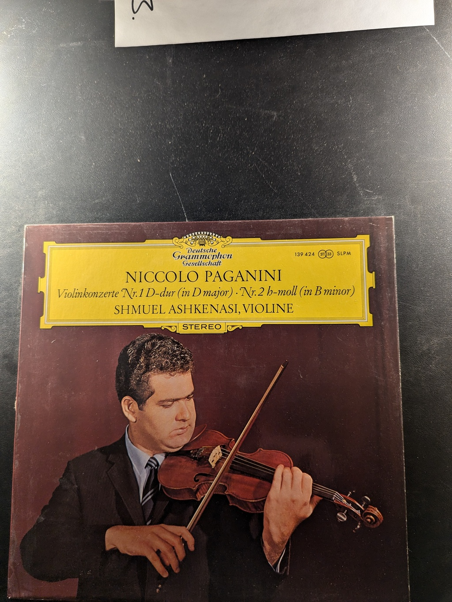

Oboe Concertos
Friedrich Milde and Theodora Schulze
Vox STPL 514.300
Elgar Violin Concerto
Yehudi Menuhin, Sir Adrian Boult, New Philharmonia Orchestra
Angel 36330
Piano Concerto in G Minor, Op. 33
Antonin Dvořák
Musical Heritage Society MHS 3025
Violinkonzerte Nr. 1 D-dur (in D major) / Nr. 2 h-moll (in B minor)
Niccolo Paganini
Deutsche Grammophon Gesellschaft 139 424
Piano Concerti
Mozart
Vox STPL 511.450
Lute Music from the Royal Courts of Europe
Julian Bream
RCA Victor Red Seal LM-2924
Greatest Hits
Linda Ronstadt
The Holly and the Ivy
The Mormon Tabernacle Choir
Columbia Masterworks ML 6752
Christmas Eve at King's College, Cambridge
King's College Choir, Cambridge
MHS 4813M
Poems and Songs of Middle Earth
J.R.R. Tolkien
Caedmon TC 1231
A Christmas Delight
Winifred Smith
Impact R-3150
A Renaissance Christmas Celebration with the Waverly Consort
Waverly Consort
Columbia Masterworks M 35109
Christmas Carols
Scottish National Orchestra Chorus
MHS 7224Y
From Every Stage
Joan Baez
Christmas with the Mormon Tabernacle Organ and Chimes
Alexander Schreiner
Columbia CS 8696
Christmas Brass
The Galliard Brass Ensemble
Musical Heritage Society MHS 7223A
The Little Drummer Boy
The Abbey Choir
Diplomat SX 1708
Christmas Music for the Winter Season
Unknown
Halo 51500
Pastorales de Noël
Jean-Pierre Rampal, Alexandre Lagoya, Michel Legrand
CBS 37205
Christmas in Anglia: Early English Music for Christmastide
Ensemble for Early Music
Nonesuch H-71334
West Side Story
Various Artists
Columbia Masterworks OS 2070
Marching Across the Green Grass and Other American Children Game Songs
Jean Ritchie
Asch Records / Folkways Records AH 752 / FC 7702
Live: Ravi Shankar at the Monterey International Pop Festival
Ravi Shankar
World Pacific Records WP-1842
Dances of Dowland
Julian Bream, Lutenist
RCA Victor Red Seal LSC-2987
{kind=link}
{kind=link}
{kind=link}
{kind=link}
{kind=link}
{kind=link}
{kind=link}
{kind=link}
{kind=link}
{kind=link}
{kind=link}
{kind=link}
{kind=link}
{kind=link}
{kind=link}
{kind=link}
{kind=link}
{kind=link}
{kind=link}
{kind=link}
{kind=link}
{kind=link}
{kind=link}
{kind=link}
{kind=link}